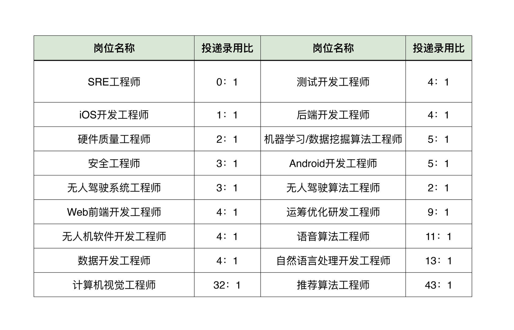
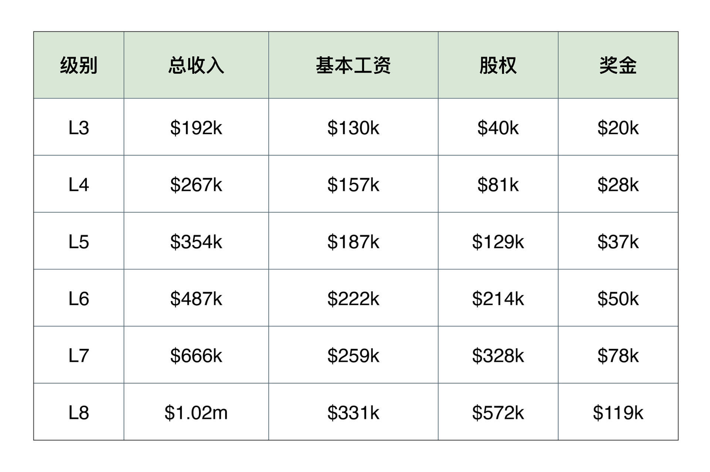

- 00 开篇词 为什么说程序员最适合学财富管理？.md.html
- 01 财富框架：建立属于你自己的财富双塔.md.html
- 02 个人发展：你自己的发展才是最大的财富源泉.md.html
- 03 理财金字塔：如何建立稳固的投资理财结构？.md.html
- 04 实战知识：有哪些收益稳健的经典资产配置组合？.md.html
- 05 支点投资法：主动投资是讲逻辑的！.md.html
- 06 不当韭菜：在财富管理的过程中摆正心态，知己知彼.md.html
- 07 职业方向：如何选择一个有前景的职业方向？.md.html
- 08 职业规划：大公司VS小公司，怎样选择更有前途？.md.html
- 09 期权股权：如何正确处理公司的期权、股权？.md.html
- 10 跳槽涨薪：如何规划一条合理的职业道路？.md.html
- 11 财富拓展：35岁失业？程序员如何拓宽财富渠道？.md.html
- 12 房产投资：如何做出理性的买房决策？.md.html
- 13 实战知识：让我们编程计算下怎么还房贷最合适.md.html
- 14 基金投资：如何让专业人士帮你赚钱？.md.html
- 15 实战知识：如何选出一只优质的基金？.md.html
- 16 股票投资：最适合散户的股票投资方法是什么？.md.html
- 17 投资闭环：如何成为越来越专业的投资者？.md.html
- 18 技术优势：程序员如何用技术超越其他投资者？.md.html
- 19 量化投资：典型的量化投资系统都包含哪些模块？.md.html
- 20 价值投资：永远不过时的中长期投资策略.md.html
- 21 趋势跟踪：怎样跟着趋势一起赚钱？.md.html
- 22 轮动策略：如何踩准市场变换的节奏？.md.html
- 23 对冲思想：这个世界上有稳赚不赔的生意吗？.md.html
- 24 多因子模型：整合不同策略，形成合力的顶层框架.md.html
- 25 机器学习：我们能用机器学习来建立投资模型吗？.md.html
- 26 量化实战：从0到1搭建起一套简单的量化投资系统（上）.md.html
- 27 量化实战：从0到1搭建起一套简单的量化投资系统（下）.md.html
- 番外一 王喆对话李腾：程序员对基金经理的灵魂十问（上）.md.html
- 番外三 有哪些能够持续学习的参考资料和相关网站？.md.html
- 番外二 王喆对话李腾：程序员对基金经理的灵魂十问（下）.md.html
- 番外四 知识总结：这门课的全部思维导图.md.html
- 答疑课堂（一） 财富框架篇、个人发展篇思考题集锦.md.html
- 答疑课堂（二） 投资实战篇、投资进阶篇思考题集锦.md.html
- 结束语 知行合一：财富管理是一生的事情.md.html
- 捐赠
07 职业方向：如何选择一个有前景的职业方向？
你好，我是王喆。从这一讲开始，我们就进入了“个人发展篇”的学习。
在财富双塔结构中，“个人发展塔”是不可或缺的两大支柱之一。对于程序员来说，我们自身的职业发展就是最值得挖掘的金矿。所以这一模块中，我会用五讲的内容给你讲一讲这些问题：
- 如何规划我们的职业生涯？
- 如何在合适的时机离职跳槽？
- 如何管理公司给我们的股票和期权？
- 如何丰富我们的财富渠道，让我们的财富结构更加稳健？
- ……
这几年来，一谈到个人发展，所有人都在说“选择大于努力”。在我看来，这句话虽然有一定道理，但也有很强的误导性。对于一个人的职场发展来说，有三件事同样重要，缺一不可，那就是“选择”、“坚持”和“努力”。
这一讲，我就先和你聊聊程序员职场发展中最重要的话题：如何选择一个有前景的职业方向，并用正确的方法“坚持”和“努力”，由此取得成功。
从长期来看，一个好的职业方向是什么样的？
熟悉我的同学都知道，我是一名算法工程师，并且在知乎、微信公众号和 GitHub上都有很多关注者。这些程序员同行们最喜欢问我的，就是如何选择一个好的职业方向。可见大家有多关心这个话题。
之前我在02讲的思考题里，提到过转换职业方向的问题：最近这五年人工智能大热，算法工程师这一职位的薪资水平也水涨船高。于是，大量的在校生转向机器学习的方向，而已经工作三五年的研发工程师们宁愿从零开始，也要投身算法岗的竞争之中。那么，如此火热的算法工程师职位，算是一个好的职业方向吗？把这个问题延伸开来讲，钱多的方向就是好的职业方向吗？
对这个问题，我的回答可以总结为一句话：一个职业方向好不好，可以从两个维度来判断：从长期来说，要看它的“高度”和“容量”；从短期来说，要看它的“供需关系”。
和考虑一个职位的短期属性相比，我更建议你优先考虑它的长期属性，用十年以上的周期去规划自己的职业生涯。因此一个职业方向的“高度”和“容量”，就是我们应该关注的两个最关键要素。
这两个要素中，“高度”指的是这个职业方向上最牛的那批程序员能达到的职场高度，也就是我们常说的“职场天花板”。刚才我们说的算法工程师，只从年收入来说，国内可以达到200万人民币，美国可以达到60万美元（再往上属于凤毛麟角，不具备统计意义）。对于普通人来说，显然是足够高的天花板了。
同理，C++或者Java后端，Android或者iOS的移动端，这些职业方向都具备很高的天花板，而且具备长期的稳定性，未来五年应该都不会有衰落的趋势。所以毫无疑问，它们都是高度足够高并且稳定，值得你去长期耕耘的领域。
相对而言，测试工程师、传统的硬件工程师，以及技术栈较老的前端工程师，这些方向的天花板就明显低很多。选择了这些方向，即使你再努力，也很有可能在收入和影响力方面比不上选择前面几个方向的同行。这也就是大家常说的“选择大于努力”。
第二个要素“容量”，指的是这个职业方向能够容纳的从业者的数量。上面提到的算法、后端、移动端等方向，它们的从业者容量都是非常大的，这就代表着整个相关行业是繁荣的，跳槽和选择的机会非常多，我们就容易把握住行业中新的发展机会。
但有些方向就差一些，比如前几年非常火的 Scala 工程师。虽然这个方向的收入天花板很高，但这几年的行业容量是稳中有降的。再比如算法岗中的一些方向，比如计算机视觉、语音识别，虽然个别岗位的高度也很高，但整个行业的容量和相关明星企业的兴衰有着密切的联系，波动非常大。从稳定性来说，这些方向就远比不上搜索、广告和推荐领域的算法岗。
总之，一个好的职业方向，一定是高度很高，容量很大且稳定的方向。如果你是应届生，或者刚工作几年的初级工程师，一定要好好审视一下自己目前的方向。如果当前的领域“高度”有限，“容量”也很低，长期来看你的职业道路就存在较大的风险。这种情况下，在职业生涯的早期换到一个有前景的赛道，就是非常值得去做的一件事。
识时务者为俊杰：短期的供需关系同样重要
在看准了一些有长远发展前景的方向之后，这些方向的短期人才供需关系同样是影响我们选择的重要因素。《三国志》中有一句话“识时务者，在乎俊杰”，就是说要看清楚当前这个时代的趋势，才能成为出色的人物。
对于我们程序员来说，在选择职场方向的时候，同样要做到认清趋势，认清自己，避免死磕，这样才能做出最适合自己发展的决定。
我们来看看这张图片，图中是某脉APP总结的2020年IT领域各大岗位的简历投递和录用比例。

我们看到，推荐算法工程师虽然是一个高度极高，容量也很大的方向，但是它的投录比居然达到了惊人的43：1。而且我相信，有意愿去投推荐算法工程师岗位的同学，学历背景、实习经验都不会太差。那么，在这样一个客观背景下，你还要跳到这片红海中，去跟大量的高素质对手搏杀吗？
这时你可能会说：如果我确实对推荐系统方向特别感兴趣呢？就只能忍痛放弃我喜欢的方向吗？其实也不是，你还可以选择其他跟推荐系统相关的岗位，比如同样很核心的数据挖掘工程师，或者后端开发工程师。
这些方向本身就有着足够的高度和容量，竞争程度也没有算法岗那么激烈。而且，在积攒了相关经验之后，未来转到推荐算法方向的gap也不会很大。综合来看，这是一个非常合适的选择。
我相信这门课的听众中，一定有非常厉害的同学，可以收割所有一线公司的offer。那这种情况下当然不用做权衡，选择你最喜欢的、高度最高的方向就好了。但是，对于我们大部分普通人来说，在认清自己的定位之后，选一个长期发展空间够大，短期竞争又不会太激烈的方向才是最优的决定。
选择后的坚持才是影响你收入的第一要素
在程序员的职业发展过程中，选择固然重要，但真正影响你收入的是选择后的“坚持”和“努力”。选择好的方向可以给你很大的发展空间，但达到预期高度就要靠你长期的积累了。
我一直很反对“单纯面向钱编程”的做法：算法岗收入多，就刷大量相关课程，恶补机器学习；Java方向火，赚得多，就报培训班，参加集训营……这样做的人，也许可以靠短期的突击准备获得一个还不错的初级职位，但他们永远都只能在金字塔的底端徘徊，殊不知，金字塔的顶端才有最精彩的风景。
下面的图片展示了Google不同级别软件工程师的收入。L3一般是硕士毕业应届生的级别，收入是19.2万美元，美国大部分一二线互联网公司的收入也基本在这个水平线上下。如果你没有决心和定力，过一两年就换方向、跳槽，那基本上你的收入也只能在这个线附近徘徊。
但是，如果你能在一个岗位深耕5年以上，升职到L5的级别，那你的收入就可以达到35.4万美元。毫无疑问，这时你已经是领域内的专家了，如果跳槽去其他公司，收入只会更高。所以在一个有前景的方向上坚持努力，才是真正的利益最大化的选择。

我在极客时间开设了《深度学习推荐系统实战》这门课之后，有几位在Java后端方向工作了五年以上的老兵，也向我咨询了转方向的问题。有一个同学是这么说的：
“推荐系统这个方向太火了，收入也高，我想通过这门课的学习转到推荐系统算法岗方向。王老师，你有没有什么学习路径能帮助我成功转型？”
对于这个问题，我是这么回答的：
“你已经在Java后端工作了五年以上，肯定积累了大量Java开发的业务经验，以及JVM调优、各种数据结构的优劣等等非常宝贵的领域知识。这时候，彻底放弃这个本身很有价值的方向肯定是一种损失。算法岗确实收入会高一些，但你要知道，在这个领域你是一个新人，和刚毕业的同学处于一个水平之上。而且，当前面试算法岗的应届生基本都是名校出身+名企实习这样的背景，你竞争起来还不一定有优势。- 我建议你结合自身的经验优势，补充领域知识，转到推荐、广告系统相关的后端岗位上去。这样不仅复用了自己五年以上的后端经验，而且能够如你所愿，转到推荐系统相关的方向，得到更大的发展空间。”
从财富管理的角度，贸然地抛弃5年的技术财富，显然是非常吃亏的一件事情。即使转方向，我们也要尽量去复用已经积累下来的技术财富，这样才能不断向更高的级别冲击。
你一定要清楚的是，当前互联网行业已经进入了存量竞争的时代。只要面试稍微高端一点的职位，就要面对非常激烈的竞争。现在，再也不是那个推导一下逻辑回归就能面上算法岗，背一下面试“八股文”就能面上研发岗的时代了。
所以“选择”后的“坚持”和“努力”就非常重要了。只要你当前所处领域的高度和容量是足够的，就要尽量沿着已有的方向往高处攀爬，这样你才能够持续积累专业领域的财富。
什么时候选择转方向，如何转？
我们刚才分析了为什么不要随意转换职业方向，这时你可能会问了：难道转换职业方向就真的那么难吗？在什么情况下，我们应该毅然决然地换方向呢？
我觉得在两种情况下，你可以坚定地选择新的职业方向。
第一种是你对自己的毅力和决心非常有信心，清楚自己一定会在新方向坚持下来。
对于这样的同学，我举双手支持你选择新的道路，因为你是一定会在新的方向上成功的。我之前带过的一位新人就是一个非常典型的例子。他是国内某211硕士毕业，做广告系统的非算法研发工作，但非常希望转做机器学习工程师。为此，他工作之余坚持学习英语，准备各类申请材料，最终申请到了CMU的相关硕士项目，现在在Facebook做机器学习工程师。
我相信如果你有这样的恒心和执行力，年龄、背景都不是关键问题，你一定会在新方向上成功。
第二种，自己所在的方向已经进入了长期的下行通道。
如果你发现，自己所处的职业方向已经处在了长期的下行通道上，就应该立刻为离开这个方向做准备。
一个典型的例子是从2013年开始的去IOE大潮。IOE指的是IBM的小型机、Oracle数据库和EMC存储设备。这三项基础设施曾经长期占据着中国互联网、金融、通信公司的核心位置，有大量高薪从业者。但是随着去IOE成为国家战略，我们就应该清楚，无论是从容量还是高度上说，这个方向都不会再现往日的辉煌了。这个时候，转方向就是IOE从业者们最应该做的事情。
类似的例子还有很多，比如曾经红极一时的Flash应用相关的工程师，塞班等非Android、iOS的移动端工程师，传统的J2EE工程师等等。在新的技术潮流的冲击下，和“坚持”原来的方向相比，果断转换到更广阔的赛道显然是一个更为明智的选择。
如果这时你已经有了转换方向的想法，可能还想问我：在转方向的过程中，我到底要具体做些什么呢？我觉得可以分为三大步骤。
第一，下决心。按照我们刚才说的原则，从“短期”和“长期”两个维度，确定你未来希望从事的方向。
这里我要强调的是，你的决定一定要建立在充分的分析决策之上；而且，一旦做出这个决定，就不要轻易改变。你要清楚，开弓没有回头箭，在接下来至少一年的准备时间里，不要做任何的摇摆，所有的工作、学习行为都要围绕着转方向这个目标。
第二，定目标。在确定自己的目标方向后，至少提前一年去看目标职位的JD（Job Description），列清我们的具体目标。你需要进行细致的规划，包括需要掌握的工具，需要了解的领域知识，需要准备的面试题等等。然后根据这些具体目标，有的放矢地去扫清转方向过程中的障碍。
第三，攒经验。你当前的工作、学习行为，都应该围绕着新的目标进行调整。比如你现在从事后端岗位，想转到推荐算法岗，那么可以看看现在公司内部有没有推荐系统相关的后端岗位，先跳到相关方向上来。再比如你是一名应届生，想从数学方向转到软件工程师方向，那么就应该马上着手去积攒项目经验，寻找相关的实习岗位。总之，要千方百计地向你的目标岗位靠近。
在这里我必须承认，转换自己的职业方向不是一件容易的事情。但是，与其在一个没有前景的方向上浪费时间，陷入“温水煮青蛙”的尴尬境地，不如搏一把，尽早跳到发展潜力更大的领域。如果你已经想清楚、做好规划，并愿意为自己的未来持续努力，我给你的只有鼓励和祝福。加油！
小结
我在05讲中重点强调过，投资是讲逻辑的。其实放到选择职业方向、规划职业道路上，道理也是一样的。进行职业方向选择时，同样需要我们保持清晰的思路，用严谨的逻辑去分析当前的形势。
在这一讲的最后，我就把今天的要点重新梳理一遍，帮助你建立严谨的职业方向选择逻辑。
- 有前景的职业方向有两个特点，一是高度高，二是容量大。
- 在具体找工作时，不仅要考虑长期发展，还要考虑短期供需关系的影响。
- 选择后的坚持才是影响你收入的第一要素，因此不建议在没有规划的情况下频繁跳槽。
- 只要满足这两个典型条件之一，就建议你转换职业方向：第一个是个人转方向的决心非常坚定，对自己非常有信心；第二个是当前职业方向进入了长期下行通道。
- 转换职业方向，具体可以分为三个步骤：第一步，下决心，开弓没有回头箭；第二步，定目标，提前一年查目标岗位的JD，确立详细的目标；第三步，攒经验，千方百计地向你的目标岗位靠近。
思考题
这是一个真实的咨询案例：小A立志成为一名一线大厂的算法工程师，他现在手头有两份offer，一份是某大厂的数据研发工程师，一份是中小厂的算法工程师。
如果是你是小A，你觉得哪个选择更有利于自己长远的职业发展呢？
期待在留言区看到你的思考和答案，如果这一讲的内容对你有帮助，也欢迎分享给你身边的朋友。我们下一讲见。
© 2019 - 2023 Liangliang Lee. Powered by gin and hexo-theme-book.